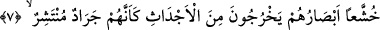
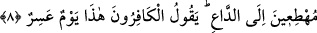

olur. Zira İsrâfîl (a.s.)’in hayata mazhar olarak elinde sûr bulunmaktadır. Allah Teâlâ
bazı şeyleri diğerlerine bağlamıştır. Gerçekleşen bütün olaylar O’nun irâdesi ve meşîeti
ile gerçekleşir. Nefislerin kötü saydığı ve hoşlanmadıkları kıyâmet gününün korkusu
şiddetlidir. Kabirde insanlara soru sorarak imtihan eden Münker ve Nekîr adlı
meleklere verilen ad da buradan alınmıştır. Zira meyyit nezdinde bu iki melek
tanınmamaktadır, bilinmemektedir.
7. Sanki etrafa yayılmış çekirge sürüsü gibi bakışları perişan (utançtan yere
bakar) bir halde kabirlerden çıkarlar.
“Gözleri düşkün bir halde kabirlerinden çıkarlar.” Azâbı gördüklerinde, kıyâmetin
şiddetli korku ve dehşetinden gözleri önlerine inmiş, düşkün bir halde kabirlerinden
çıkarlar.
Huşû, itâat, teslîmiyet, insanın maddî organlarında görülen sükûn ve itminân hâline
denir. Kalb ve gönülde duyulan huşû, bağlanma ve boyun eğmeyi ifâde etmekte
kullanılan kavramdır. Nitekim kalb boyun eğip teslim olunca, beden organları huşû ve
sükûn bulur.
Huşûun, boyun eğmenin özellikle gözde ifâde buyurulmuş olması, duygulanmanın ve
etkilenmenin en çok gözlerde tezahür etmesindendir. Bunun gibi korku, utanma ve
benzeri insanda bulunan duygular öncelikle gözde fark edilir. “İnsanların, ateşin
etrafını sarmış pervaneler gibi olduğu gün” (el-Kâria, 101/4) âyet-i kerîme’sinde
olduğu gibi.“Sanki etrafa yayılmış çekirge sürüsü gibi” büyük dalgalar ve paramparça
olmuş halde çevreye yayılacaklardır.
8. Dâvetçiye koşarak. O esnada kâfirler: Bu, çok çetin bir gündür! derler.
“Dâvetçiye koşarak” bu ne haldir, derler. Yâni çağıranın yönüne, boyunlarını ona
uzatmış olarak veya gözlerini ondan ayırmamacasına bakarlar. Burada, ruhların basîreti
mahv olup belirsiz hale geldiği için hakkı görmekten, kalp gözlerinin nuru söndüğü için
Hakk’ın delillerini idrak etmekten âciz olan nefislerin gözlerinin zillet ve hastalığına bir
işâret vardır. Ayrıca, bu kötü nefislerin rezil ve bayağı sıfatlarının kabirlerinden
çekirgeler gibi çıkarak gönül tarlalarının rûhânî ahlâk ekinlerini ve meyvelerini yemeye
çok hırslı olarak, ruh tarlalarına ve gönül bahçelerine zarar vermek ve ifsad etmek için
yayılmış olduklarına bu âyet-i kerîme’de bir işâret vardır. Bu kötü nefisleri, cismânî ve